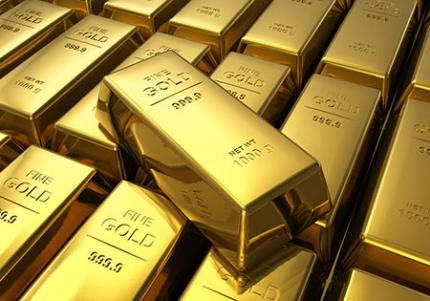

Fakta om guld
Guld är kompakt, mjukt, glänsande och den mest formbara och kemiskt tåliga av alla kända metaller. Rent guld har en klart gul färg som traditionellt har ansetts tilltalande, men är så mjukt att det ensamt knappast duger till någon teknisk användning. Hårdheten kan dock ökas genom legering med mindre mängder av andra metaller och guldet blir då användbart i många sammanhang. Smyckesguld är oftast 18 karat och i Sverige vanligen 75 % guld, 16-17 % koppar och 8-9 % silver. Smyckesguld förekommer i ett flertal färger, som färgat guld.
Priset på guld varierar över tid och sätts på internationella råvarubörser. Den 22 mars 2013 uppgick värdet till cirka 336 kronor/gram, eller 1607,75 USD/oz. Ett troy ounce, som ädelmetaller mäts i, är 31,103 476 8 gram. Det totala värdet av allt utvunnet guld på jorden uppgår till 9 500 miljarder USD. Det är inte ens 1 % av guldet i jordskorpan och i världshaven.
